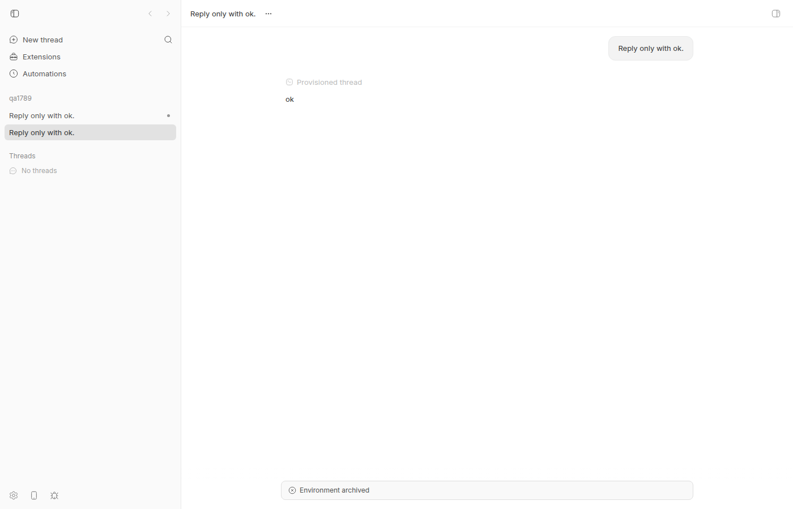

#1789 · A thread whose environment no longer exists still reports idle, and the message queue accepts sends into it that can never be delivered
Verdict: PARTIALLY REPRODUCED — the headline defect (idle thread + gone environment + queue accepts undeliverable messages, and the 409 on the environment pull-request route) is reproduced end-to-end and at the unit level; the three later comment "forms" (pending-but-undelivered between live threads, prompt loss at spawn, Missing input text) were not reproducible here and the reporter retracted the last one. · Root-cause confidence: high (for the reproduced part)
1. TL;DR
When a thread's managed worktree is gone — the normal way to get there is: archive the thread, wait past the 5-minute grace window so the worktree is destroyed, then un-archive the thread — the thread record keeps status: "idle" and its environmentId still points at an environment row whose status is destroyed and whose path is null. bb's product decision (comment on the unarchive route) is that such a thread is read-only and is never reprovisioned: the direct send path (POST /threads/:id/send, bb thread tell) correctly answers 409 thread_environment_unavailable. But the queued-message create path (POST /threads/:id/queued-messages, bb thread queue create) only checks archived/deleted/stopping and never looks at the environment, so it answers 201 with a queued-message id. The server then tries to auto-send the message, hits the same 409 internally, logs a warning, leaves the row in the queue, and the periodic sweep retries every 10 s forever. Nothing on the thread record (bb thread show, bb thread list, GET /threads/:id) says the thread cannot run; the CLI even labels the destroyed environment "Provisioning". Separately, every environment workspace route (pull-request, status, diff) answers 409 environment_not_ready "Environment unavailable" for a destroyed environment, which is the error the reporter's hourly archiving job trips over.
2. Claims vs findings
| Claim from the issue | Status | Evidence |
|---|---|---|
A thread whose backing worktree has been removed still reports status: idle with environmentId attached; nothing on the thread record says the environment is gone. | Verified | Archive → grace elapsed → destroyed → unarchive. GET /threads/thr_4ntcmbky7w returns status:"idle", runtime.displayStatus:"idle", environmentId:"env_aifhcw4p6x" while GET /environments/env_aifhcw4p6x is status:"destroyed", path:null. bb thread show prints Status: idle and Environment: Provisioning (env_…). Repro files: thread-get.json, env-after-destroy.json, thread-show-after-unarchive.txt. Note: GET /threads/:id?include=environment does embed the environment row, and the web app uses it to show an "Environment archived" banner — so the information exists, but not on the thread record itself and not in the CLI default output. |
| Queueing a message to that thread succeeds (CLI returns a queued-message id) and the message is never delivered; messages accumulate. | Verified | bb thread queue create → exit 0, id qmsg_f8pm9kaxpn; a second curl → 201; bb thread queue list shows both still pending minutes later; server log has 86 "Queued message auto-send … failed: Thread environment is unavailable" lines at 10 s cadence. Unit test public-thread-queue-gone-environment.test.ts fails on main with expected 201 to be 409. |
| Interacting with the thread's environment surfaces a 409, but only on that path. | Verified | bb thread tell and bb thread queue send → HTTP 409: Thread environment is unavailable. GET /environments/:id/pull-request → 409 environment_not_ready "Environment unavailable" details.environmentStatus:"destroyed". |
(Comment 2) An hourly plugin job asking each unarchived thread's environment for its PR gets HTTP 409: Environment unavailable on threads pointing at removed environments. | Verified | Same route, same error text: env-pull-request.txt. The reporter's "environments that no longer exist" are environment rows in destroyed status (rows are only pruned after 7 days, and then the FK sets thread.environmentId to NULL — see #1924). |
| (Comment 3) A message queued to an active thread with a healthy environment stayed pending and was never delivered. | Unverified | Not reproduced. No mechanism found in the queue drain for a healthy idle thread; auto-send only runs when the thread is idle and has a provider thread id (so a thread that never finishes a turn, or errored, would hold messages). Would need the reporter's host/server logs around the timestamps. |
(Comment 4) bb thread spawn --prompt returned success but the thread never received the prompt. | Unverified | Both spawns in this repro (--prompt "Reply only with ok.", codex) delivered the prompt and got "ok". Not reproduced; likely a different bug (provider/bridge specific) and should be its own issue with the event log of the affected thread. |
(Comment 5) pi-bridge turn.submit rejected with Missing input text for boundary submits of queued messages. | Unverified / retracted | Reporter's own retest on 0.39.0 (last comment) found it fixed. No code at c7c66423d emits that string server-side; git log -S shows no recent change mentioning it in this repo, so the fix (if any) is in the pi bridge/provider plugin. Out of scope here. |
| Reporter's bb version not stated for the first report; 0.39.0 for the retest. | Unverified | Base c7c66423d (main, 2026-08-20) still has the queue-create gap, so the headline bug is present at HEAD. |
3. Environment
- bb commit
c7c66423d55c320bab9103218f0ffef1a8191331(main, 2026-08-20); origin/main had no newer commits at investigation time. - Linux 7.0.0-29-generic x86_64, node v24.18.0, codex-cli 0.148.0 (provider
codex, model gpt-5.6-sol). - Dev instance from
scripts/bb-dev-app currentin worktree/home/USER/projects/bb/.claude/worktrees/wf_926b3193-f6c-2: App :16895, Server :24895, Host daemon :32895, data dir~/.bb-dev/projects-bb-.claude-worktrees-wf_926b3193-f6c-2-79164247b8a6(deleted at cleanup). Host idhost_rriau729fg, projectproj_mufw9k2pk4on scratch repo/tmp/bb-1789-repo.
4. Minimal reproduction
4a. Live (CLI + HTTP)
- Start a dev instance and create a project on a scratch git repo:
scripts/bb-dev-app current # prints Server URL; export BB_SERVER_URL=http://localhost:24895 mkdir /tmp/bb-1789-repo && git -C /tmp/bb-1789-repo init -q -b main && echo hi > /tmp/bb-1789-repo/README.md && git -C /tmp/bb-1789-repo add . && git -C /tmp/bb-1789-repo commit -qm init curl -s -X POST $BB_SERVER_URL/api/v1/projects -H 'content-type: application/json' \ -d '{"name":"qa1789","source":{"type":"local_path","path":"/tmp/bb-1789-repo","hostId":"<host id from: pnpm bb:dev machine list>"}}' # → {"id":"proj_mufw9k2pk4", ...} - Spawn a thread in a new managed worktree and let it finish one tiny turn (it needs a provider thread id to be "idle with history"):
pnpm bb:dev thread spawn --project proj_mufw9k2pk4 --new-environment worktree --machine host_rriau729fg --provider codex --prompt "Reply only with ok." --json # → "id": "thr_4ntcmbky7w"; after ~30 s: pnpm bb:dev thread show thr_4ntcmbky7w # Status: idle # Environment: Worktree (env_aifhcw4p6x)
- Archive the thread, wait past the 5-minute managed-worktree grace window (
MANAGED_ENVIRONMENT_RETIRE_GRACE_MS), then un-archive:pnpm bb:dev thread archive thr_4ntcmbky7w # env goes retiring # ... wait ≥ 5 min; the 10 s sweep then destroys the worktree ... curl -s $BB_SERVER_URL/api/v1/environments/env_aifhcw4p6x # → "status":"destroyed","path":null pnpm bb:dev thread unarchive thr_4ntcmbky7w
- Observe the thread record. Expected: something on the thread says it cannot run. Actual:
$ pnpm bb:dev thread show thr_4ntcmbky7w Thread: thr_4ntcmbky7w Status: idle Project: proj_mufw9k2pk4 Environment: Provisioning (env_aifhcw4p6x) Pull request: unavailable HTTP 409: Environment unavailable $ curl -s $BB_SERVER_URL/api/v1/threads/thr_4ntcmbky7w | jq '{status, environmentId, runtime}' { "status": "idle", "environmentId": "env_aifhcw4p6x", "runtime": { "displayStatus": "idle", ... } } $ pnpm bb:dev thread list --project proj_mufw9k2pk4 ID Title Project Status thr_4ntcmbky7w Reply only with ok. qa1789 idle - Queue a message. Expected: 409 like the direct send path. Actual: 201 + id, and it never drains:
$ pnpm bb:dev thread queue create thr_4ntcmbky7w "Reply only with ok." --json ; echo exit=$? { "id": "qmsg_f8pm9kaxpn", "content": [ { "type": "text", "text": "Reply only with ok.", "mentions": [] } ], "model": "gpt-5.6-sol", ... } exit=0 $ curl -s -X POST $BB_SERVER_URL/api/v1/threads/thr_4ntcmbky7w/queued-messages -H 'content-type: application/json' \ -d '{"input":[{"type":"text","text":"second queued message"}]}' -w '\nHTTP %{http_code}\n' {"id":"qmsg_rg9zznbku7", ...} HTTP 201 # 30 s later, still pending, thread still idle: $ pnpm bb:dev thread queue list thr_4ntcmbky7w | grep -c '"id"' 2 $ pnpm bb:dev thread show thr_4ntcmbky7w | head -2 Thread: thr_4ntcmbky7w Status: idle - Compare with the direct-send paths, which do refuse:
$ pnpm bb:dev thread tell thr_4ntcmbky7w "Reply only with ok." Error: HTTP 409: Thread environment is unavailable $ pnpm bb:dev thread queue send thr_4ntcmbky7w qmsg_f8pm9kaxpn Error: HTTP 409: Thread environment is unavailable $ curl -s $BB_SERVER_URL/api/v1/environments/env_aifhcw4p6x/pull-request -w '\nHTTP %{http_code}\n' {"code":"environment_not_ready","message":"Environment unavailable","details":{"environmentStatus":"destroyed","hasPath":false}} HTTP 409 - Server log (
server.log) shows the queue trying and failing every 10 s, forever:1787235603384 qmsg_f8pm9kaxpn thr_4ntcmbky7w Thread environment is unavailable | Queued message auto-send failed 1787235603385 qmsg_f8pm9kaxpn thr_4ntcmbky7w Thread environment is unavailable | Queued message auto-send request failed ... (43 × "Queued message auto-send failed", 40 × "Queued message auto-send sweep failed" in ~7 minutes)

idle/"Provisioning" and accepted the queued messages.4b. Unit test (fails on main)
Saved at 1789/repro/public-thread-queue-gone-environment.test.ts; put it in apps/server/test/public/ and run cd apps/server && pnpm exec vitest run test/public/public-thread-queue-gone-environment.test.ts. On c7c66423d the assertion at the end fails for both destroying and destroyed (vitest-main.txt):
AssertionError: queue-create answered 201 {"id":"qmsg_pigge4de3h","content":[{"type":"text","text":"queued into a gone env","mentions":[]}],...}; queued rows: 1: expected 201 to be 409
import { getThread, listQueuedThreadMessages } from "@bb/db";
import {
encodeClientTurnRequestIdNumber,
threadScope,
type EnvironmentStatus,
} from "@bb/domain";
import { describe, expect, it } from "vitest";
import { readJson } from "../helpers/json.js";
import {
seedEnvironment,
seedEvent,
seedHostSession,
seedProjectWithSource,
seedThread,
} from "../helpers/seed.js";
import { withTestHarness } from "../helpers/test-app.js";
/**
* Repro for get-bb/bb#1789.
*
* A direct send into a thread whose environment is destroying/destroyed is
* rejected with 409 `thread_environment_unavailable` (see
* public-thread-environment-decoupling.test.ts). The queued-message create
* route has no such guard: it answers 201 with a queued-message id, the
* thread keeps reporting `idle`, and the message can never drain because the
* auto-send path throws the very 409 the create route should have returned.
*/
describe("queued message into a thread whose environment is gone (#1789)", () => {
for (const status of [
"destroying",
"destroyed",
] as const satisfies readonly EnvironmentStatus[]) {
it(`rejects queue-create when the environment is ${status} (currently accepts it)`, async () => {
await withTestHarness(async (harness) => {
const { host } = seedHostSession(harness.deps, {
id: `host-queue-${status}`,
});
const { project } = seedProjectWithSource(harness.deps, {
hostId: host.id,
});
const environment = seedEnvironment(harness.deps, {
hostId: host.id,
managed: true,
projectId: project.id,
path: null,
status,
workspaceProvisionType: "managed-worktree",
});
const thread = seedThread(harness.deps, {
projectId: project.id,
environmentId: environment.id,
status: "idle",
});
// A prior accepted turn: the thread has a stored execution model and
// a provider thread id, exactly like a real idle thread that ran once.
seedEvent(harness.deps, {
threadId: thread.id,
environmentId: environment.id,
sequence: 1,
type: "client/turn/requested",
scope: threadScope(),
data: {
direction: "outbound",
requestId: encodeClientTurnRequestIdNumber({ value: 1 }),
input: [{ type: "text", text: "Earlier work" }],
target: { kind: "new-turn" },
execution: {
model: "gpt-5",
serviceTier: "default",
reasoningLevel: "medium",
permissionMode: "full",
source: "client/turn/requested",
},
initiator: "user",
senderThreadId: null,
request: { method: "turn/start", params: {} },
source: "tell",
},
});
// Control: the direct send path already refuses.
const sendResponse = await harness.app.request(
`/api/v1/threads/${thread.id}/send`,
{
method: "POST",
headers: { "content-type": "application/json" },
body: JSON.stringify({
mode: "auto",
input: [{ type: "text", text: "direct send" }],
}),
},
);
expect(sendResponse.status).toBe(409);
// Bug: the queue-create path accepts the same message.
const queueResponse = await harness.app.request(
`/api/v1/threads/${thread.id}/queued-messages`,
{
method: "POST",
headers: { "content-type": "application/json" },
body: JSON.stringify({
input: [{ type: "text", text: "queued into a gone env" }],
}),
},
);
const body = await readJson(queueResponse);
// Thread record still claims to be a healthy idle worker.
expect(getThread(harness.db, thread.id)?.status).toBe("idle");
// EXPECTED (after fix): 409 thread_environment_unavailable and no
// queued row. ACTUAL on c7c66423d: 201 + queued message id, and the
// row sits in the queue forever.
expect(
queueResponse.status,
`queue-create answered ${queueResponse.status} ${JSON.stringify(body)}; queued rows: ${
listQueuedThreadMessages(harness.db, thread.id).length
}`,
).toBe(409);
expect(listQueuedThreadMessages(harness.db, thread.id)).toHaveLength(0);
});
});
}
});
Repro files: 1789/repro/
5. Root cause
Mechanism. bb already has a single definition of "the environment is gone" — goneThreadEnvironmentDetails (status destroying/destroyed) — and the direct send path applies it before doing anything: requireThreadCommandEnvironment throws 409 thread_environment_unavailable. The queued-message create route does not. createQueuedMessageForThread only calls ensureThreadIsWritable (archived / stopping / deleted), validates attachments, resolves execution options, inserts the row, and — if the thread is idle and has a provider thread id (lines 297-304) — schedules an auto-send. The auto-send, sendClaimedQueuedMessageForIdleProviderThread, is where the environment is finally checked via requireReadyQueuedMessageEnvironment → requireThreadCommandEnvironment → 409. That exception is caught in sendNextQueuedMessageIfPresent, logged as a warning, and the claim is released so the row stays queued. runQueuedMessageAutoSendSweep runs every 10 s (setInterval(..., 10_000) in start-server.ts), picks the thread up again through listIdleThreadsWithQueuedMessages, and repeats. So the 201 the client saw is a promise the server already knows it can never keep.
Why the thread says idle. Thread status is the provider-runtime state; the environment lifecycle is deliberately decoupled (see the comment above routes.unarchive: after the grace window the environment is destroyed, retire.cancelled is a no-op, and "the thread remains read-only"). Nothing writes that read-only-ness onto the thread: GET /threads/:id has no environment-status field (only include=environment embeds the row), bb thread show/list print only status, and the CLI/app label helper formatEnvironmentDisplay maps "managed-worktree with path === null" to "Provisioning", which is exactly wrong for a destroyed worktree. The web app independently reads the embedded environment and shows "Environment archived", so the product knows — only the API/CLI consumers are left guessing.
Why the environment routes 409. requireWorkspaceCommandTarget rejects any non-ready/pathless environment with environment_not_ready "Environment unavailable"; the pull-request route at routes.pullRequest uses it. That is correct behaviour, but callers iterating threads have no cheaper signal than calling it.
Deeper issue. After 7 days the destroyed row is pruned (pruneDestroyedEnvironments) and the FK sets thread.environmentId to NULL, at which point direct sends say never_attached and archive itself 409s (#1924). The queue path would still accept messages for such a thread, because it never looks at the environment at all. Any fix should cover "environment gone" and "environment row gone" the same way.
6. Proposed fix (first principles)
Confident for the queue-accept part; implemented and verified locally (proposed-fix.diff): in apps/server/src/routes/threads/actions.ts, make createQueuedMessageForThread apply the existing gone-environment rule right after ensureThreadIsWritable, so queue-create answers the same 409 thread_environment_unavailable as send. With this diff the repro test passes, the rest of apps/server/test/public + test/threads still pass (558/562, the 4 failures were 5 s timeouts under load that pass on rerun), and the live instance answered HTTP 409 {"code":"thread_environment_unavailable","details":{"reason":"destroyed",...}} to the same curl after restart (queue-create-after-fix.txt).
diff --git a/apps/server/src/routes/threads/actions.ts b/apps/server/src/routes/threads/actions.ts
index a59673fa2..154e9982d 100644
--- a/apps/server/src/routes/threads/actions.ts
+++ b/apps/server/src/routes/threads/actions.ts
@@ -40,6 +40,10 @@ import {
} from "../../services/environments/environment-cleanup-internal.js";
import { applyLoggedEnvironmentLifecycleEvent } from "../../services/environments/lifecycle-outcome.js";
import { requirePublicThread } from "../../services/lib/entity-lookup.js";
+import {
+ goneThreadEnvironmentDetails,
+ throwThreadEnvironmentUnavailable,
+} from "../../services/lib/lifecycle-api-errors.js";
import { parseSafeRelativeRoutePath } from "../relative-route-path.js";
import { validatePromptAttachmentReferences } from "../../services/projects/attachments.js";
import {
@@ -252,12 +256,33 @@ function queuedMessagePayloadFromSendRequest(
};
}
+/**
+ * A queued message can only ever drain into the thread's environment. A gone
+ * environment (destroying/destroyed) is never reprovisioned, so accepting the
+ * message would park it in the queue forever while the thread keeps reporting
+ * `idle` (#1789). Refuse with the same 409 the direct send path returns.
+ */
+function ensureThreadEnvironmentIsNotGone(deps: AppDeps, thread: Thread): void {
+ if (thread.environmentId === null) {
+ return;
+ }
+ const environment = getEnvironment(deps.db, thread.environmentId);
+ if (!environment) {
+ return;
+ }
+ const goneDetails = goneThreadEnvironmentDetails(environment);
+ if (goneDetails) {
+ throwThreadEnvironmentUnavailable(goneDetails);
+ }
+}
+
async function createQueuedMessageForThread(
deps: AppDeps,
args: CreateQueuedMessageForThreadArgs,
): Promise<ThreadQueuedMessage> {
const { payload, thread } = args;
ensureThreadIsWritable(thread);
+ ensureThreadEnvironmentIsNotGone(deps, thread);
await validatePromptAttachmentReferences({
dataDir: deps.config.dataDir,
input: payload.input,
What could go wrong: the send route also funnels into createQueuedMessageForThread when the thread is active (queue-if-active / manual compaction); an active thread cannot have a destroying/destroyed environment (destroy marks live threads errored), so the new check is a no-op there. Threads with environmentId === null are intentionally left alone by this diff because starting threads legitimately have no environment yet; to close the post-prune hole, reject when environmentId === null && getLastProviderThreadId(...) !== null (a thread that has run before but lost its environment), or better, stop pruning rows that live threads still reference.
For the "thread reports idle" half (the reporter's item 1), the least invasive product change is to expose the environment condition on the thread response — e.g. a runtime.environmentStatus / canRun:false computed at the server boundary from goneThreadEnvironmentDetails — and have bb thread show/list print it; plus fix formatEnvironmentDisplay to say "Destroyed"/"Archived" instead of "Provisioning" when status is destroying/destroyed. Until then, API consumers can already do GET /threads/:id?include=environment (or /threads?include=environment) and check environment.status before touching workspace routes — that is a one-call workaround for the comment-2 archiving job.
7. PR review
No open PRs are linked to this issue.
8. Related issues
- #1924 — Archiving a thread fails with 409 once its environment row has been pruned (the 7-day follow-on state of the same dangling
environmentId). - #1710 — Archived threads cannot resume in the original chat (the "Environment archived" read-only state users hit after the grace window).
- #1787 — execution-profile observability, linked by the reporter.
- Comments 3–5 (undelivered message between live threads, prompt loss at spawn,
Missing input text) are distinct mechanisms and deserve their own issues with the recipient thread's event log attached; the last one is reported fixed on 0.39.0 by the reporter.
9. Appendix
Files
server.log,host-daemon.log— full dev-instance logs for the session;server-log-autosend-failures.txt— first two failure lines decoded.spawn.json,project.json,queue-create.json,queue-create-curl.txt,queue-list.txt,tell.txt,queue-send.txt,env-pull-request.txt,thread-get.json,env-after-destroy.json.vitest-main.txt(fails on base),vitest-fixed.txt(passes with diff),vitest-fixed-broad.txt+vitest-rerun.txt(broader suites).shot4.js— doobie script for the screenshot.
Side experiment (not the reported bug)
A second thread (thr_wgwc3u4vrg) had its worktree directory removed out from under a ready environment with git worktree remove --force. Because the codex session process was still alive, a queued message was still delivered and answered ("ok") — the server never checks the path on disk, and the environment stayed ready. So "worktree removed on disk while the env row says ready" is a third possible origin of the reporter's state but is not what produces the 409s; the destroyed-after-archive path above is.
Commands run
git rev-parse HEAD; pnpm install --frozen-lockfile --prefer-offline; pnpm exec turbo run build scripts/bb-dev-app current; scripts/bb-dev-app env curl -s -X POST $BB_SERVER_URL/api/v1/projects ... (see step 1) node packages/scripts/dist/commands/run-cli.js thread spawn --project proj_mufw9k2pk4 --new-environment worktree --machine host_rriau729fg --provider codex --prompt "Reply only with ok." --json node packages/scripts/dist/commands/run-cli.js thread show thr_4ntcmbky7w node packages/scripts/dist/commands/run-cli.js thread archive thr_4ntcmbky7w # 14:14:31 curl -s $BB_SERVER_URL/api/v1/environments/env_aifhcw4p6x # retiring → destroyed at ~14:19:40 node packages/scripts/dist/commands/run-cli.js thread unarchive thr_4ntcmbky7w node packages/scripts/dist/commands/run-cli.js thread queue create thr_4ntcmbky7w "Reply only with ok." --json node packages/scripts/dist/commands/run-cli.js thread queue list thr_4ntcmbky7w node packages/scripts/dist/commands/run-cli.js thread tell thr_4ntcmbky7w "Reply only with ok." node packages/scripts/dist/commands/run-cli.js thread queue send thr_4ntcmbky7w qmsg_f8pm9kaxpn curl -s $BB_SERVER_URL/api/v1/environments/env_aifhcw4p6x/pull-request cd apps/server && pnpm exec vitest run test/public/public-thread-queue-gone-environment.test.ts (apply proposed-fix.diff) pnpm exec vitest run test/public test/threads; pnpm dev:stop; scripts/bb-dev-app current; curl ... queued-messages → 409 doobie --headless run shot4.js